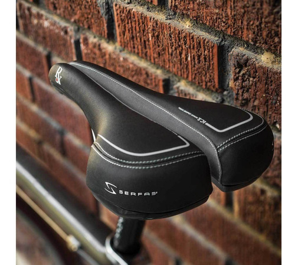

Si lo que estas buscando es un asiento cómodo y económico los asientos Serfas rx
además de tener un precio muy competitivo, están diseñados para mantener el máximo
flujo sanguíneo y reducir el entumecimiento al tiempo que
brindan la mejor protección
y rendimiento del mercado. Van muy bien para el día a día en ciclistas que suelen padecer
molestias en la zona isquiática. Si eliges Serfas RX ten por seguro que ahorrarás dinero e
invertirás en confort.
- Diseño de barra doble rieles de cromoly
- Cubierta de microfibra impermeable / antimicrobiana
- Longitud: 265 mm
- Ancho: 160 mm
- Peso: 420 gramos
Ficha Técnica:
